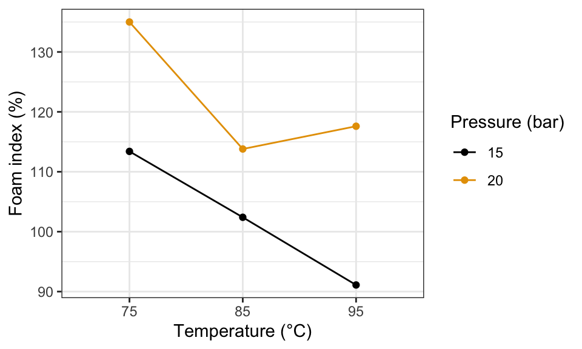
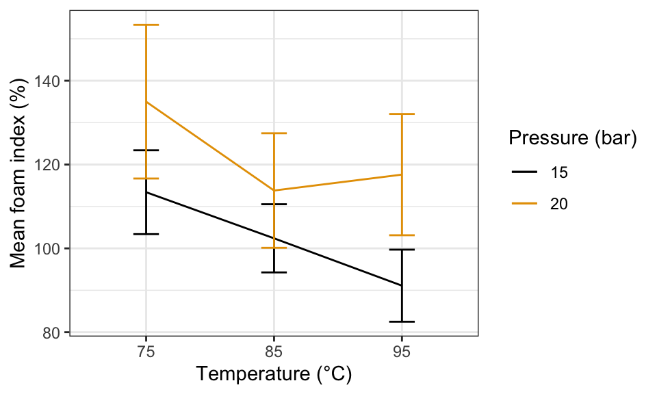
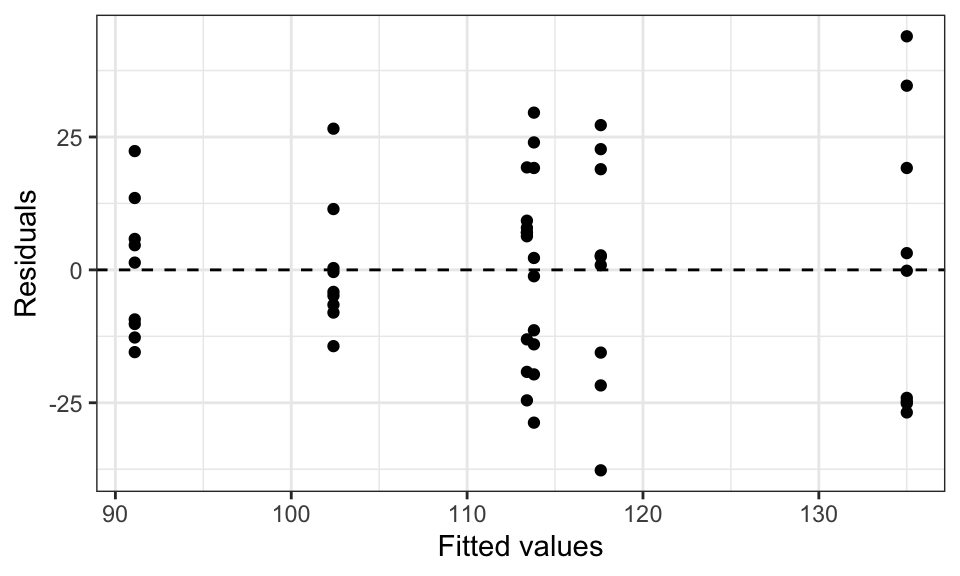

Masella et al. (2015) developed a new method of brewing espresso. Traditional methods use steam from hot water to create pressure that drives water through coffee grounds. In this new method, pressure differentials between the interior and exterior of the brewing chamber control the flow. This allows finer control of both pressure and temperature. The authors investigated the effects of pressure and temperature on foam index.
Variable
Description
foamIndx
Ratio of foam to liquid volume (%) measured 30 s after extraction
trt_id
Label for each treatment group (temperature × pressure combination)
1. Informally explore the effects of pressure and temperature on foam index by creating an interaction plot with tempC on the x-axis and prssBar as the grouping variable (color and line). Does pressure appear to increase or decrease the foam index? Does temperature appear to increase or decrease it? Does the plot suggest a strong interaction?
NoteSolution
ggplot(espresso, aes(x = tempC, y = foamIndx, color = prssBar, group = prssBar)) +stat_summary(fun = mean, geom ="line") +stat_summary(fun = mean, geom ="point") +labs(x ="Temperature (°C)", y ="Foam index (%)", color ="Pressure (bar)")

With pointwise 95% confidence intervals:
espresso |>group_by(tempC, prssBar) |>summarize(mean =mean(foamIndx),se =sd(foamIndx) /sqrt(n()),.groups ="drop") |>mutate(lower = mean -2* se,upper = mean +2* se) |>ggplot(aes(x = tempC, y = mean, color = prssBar, group = prssBar)) +geom_line() +geom_errorbar(aes(ymin = lower, ymax = upper), width =0.2) +labs(x ="Temperature (°C)", y ="Mean foam index (%)", color ="Pressure (bar)")

Temperature appears to decrease the foam index and higher pressure appears to increase it. There might be a weak interaction: the foam index seems to level off at higher temperatures for higher pressures but not for lower pressures.
2. Fit the cell means model (full interaction model) and evaluate whether the assumptions of the ANOVA model seem appropriate. Make a residual plot (residuals vs. fitted values).
NoteSolution
aout_cell <-aov(foamIndx ~ prssBar * tempC, data = espresso)augment(aout_cell) |>ggplot(aes(x = .fitted, y = .resid)) +geom_point() +geom_hline(yintercept =0, lty =2) +labs(x ="Fitted values", y ="Residuals")

The residual plot looks good: no obvious fan shape and residuals are scattered randomly around zero. The constant variance assumption appears reasonable.
3. Write out the two-way ANOVA model with interactions for this study. Use the notation \(Y_{ijk} = \ldots\) and define all terms.
\(Y_{ijk}\): foam index of the \(k\)th observation at pressure \(i\) and temperature \(j\)
\(\mu\): baseline mean
\(\alpha_i\): main effect of pressure level \(i\)
\(\beta_j\): main effect of temperature level \(j\)
\((\alpha\beta)_{ij}\): interaction effect of pressure \(i\) and temperature \(j\)
\(\epsilon_{ijk}\): random error (assumed \(\sim N(0, \sigma^2)\), independent)
4. Write out the null and alternative hypotheses in terms of the \((\alpha\beta)_{ij}\) parameters to test whether there is an interaction between pressure and temperature.
NoteSolution
\(H_0: (\alpha\beta)_{ij} = 0\) for all \(i\) and all \(j\)
\(H_A:\) At least one \((\alpha\beta)_{ij} \neq 0\)
5. Formally test whether there is an interaction between pressure and temperature. Report the \(F\)-statistic, degrees of freedom, and \(p\)-value, and state a conclusion.
NoteSolution
aout_cell <-aov(foamIndx ~ prssBar * tempC, data = espresso)tidy(aout_cell)
The \(p\)-value for prssBar:tempC is large (approximately 0.48), providing no evidence of an interaction between pressure and temperature. We proceed with the additive model.
6. Fit the additive model (main effects only). Is there a significant effect of pressure or temperature on the foam index? Report the \(F\)-statistics and \(p\)-values for each main effect.
NoteSolution
aout_add <-aov(foamIndx ~ prssBar + tempC, data = espresso)tidy(aout_add)
# A tibble: 3 × 6
term df sumsq meansq statistic p.value
<chr> <dbl> <dbl> <dbl> <dbl> <dbl>
1 prssBar 1 5310. 5310. 14.7 0.000351
2 tempC 2 4004. 2002. 5.55 0.00666
3 Residuals 50 18035. 361. NA NA
Yes — both pressure (\(p \approx 0.0035\)) and temperature (\(p \approx 0.0066\)) have significant effects on foam index.
7. Extract the coefficient estimates and confidence intervals from the additive model using tidy(lm(...), conf.int = TRUE). Interpret each coefficient in context.
Hint: The default reference level for tempC is 75°C. To also obtain the contrast between 85°C and 95°C, refit with 85°C as the reference level using mutate(tempC = relevel(tempC, ref = "85")) and extract that model’s coefficients too.
Pressure: Increasing pressure from 15 bar to 20 bar is estimated to increase the foam index by about 19.8% (95% CI: 9.5% to 30.2%).
Temperature 75→85°C: Increasing temperature from 75°C to 85°C is estimated to decrease the foam index by about 16.1% (95% CI: 3.4% to 28.8% decrease).
Temperature 85→95°C: A further increase from 85°C to 95°C is estimated to decrease the foam index by about 3.6% additional (95% CI: 9.0% increase to 16.5% decrease) — not significant on its own.
8. Now run three separate two-sample \(t\)-tests comparing foam index at the two pressure levels (15 bar vs. 20 bar), one test for each temperature level (75°C, 85°C, and 95°C). Do any of these individual tests produce a significant result? How does this compare to the conclusion from the additive ANOVA in Question 6?
Welch Two Sample t-test
data: foamIndx by prssBar
t = -2.0687, df = 12.374, p-value = 0.06014
alternative hypothesis: true difference in means between group 15 and group 20 is not equal to 0
95 percent confidence interval:
-44.275957 1.073735
sample estimates:
mean in group 15 mean in group 20
113.4000 135.0011
t.test(foamIndx ~ prssBar, data = dat85)
Welch Two Sample t-test
data: foamIndx by prssBar
t = -1.4336, df = 13.036, p-value = 0.1752
alternative hypothesis: true difference in means between group 15 and group 20 is not equal to 0
95 percent confidence interval:
-28.573933 5.773933
sample estimates:
mean in group 15 mean in group 20
102.4 113.8
t.test(foamIndx ~ prssBar, data = dat95)
Welch Two Sample t-test
data: foamIndx by prssBar
t = -3.149, df = 13.026, p-value = 0.00767
alternative hypothesis: true difference in means between group 15 and group 20 is not equal to 0
95 percent confidence interval:
-44.674609 -8.323169
sample estimates:
mean in group 15 mean in group 20
91.10111 117.60000
None of the individual \(t\)-tests is significant at the 0.05 level when run separately. This contrasts with the additive ANOVA, which found a significant pressure effect (\(p \approx 0.0035\)). The ANOVA is more powerful because it pools the residual variance estimate across all temperature groups, giving a much more precise estimate of \(\sigma^2\) and therefore more power to detect the pressure effect.
References
Masella, Piernicola, Lorenzo Guerrini, Silvia Spinelli, et al. 2015. “A New Espresso Brewing Method.”Journal of Food Engineering 146: 204–8. https://doi.org/10.1016/j.jfoodeng.2014.09.001.